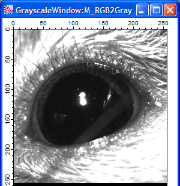

EyelidTracker
Introduction:
EyelidTracker was developed in Dr. Daniel Johnston's lab to quantify eyelid
position during eyelid conditioning experiments.
During the development, Dr. Javier Medina in the University of Pennsylvania gave
us invaluable suggestions and helps, including sample videos and Matlab files. We
deeply appreciate his generosity and assistance. Here is a link to his article related
to this project (link).
Authors:
Dr. Payne Chang, Dr. Rick Gray, Dr. Randy Chitwood, and Dr. Johnston's lab @2012.
If you have any comments or suggestions, please contact Dr. Payne Chang at
paynechang@gmail.com .
Development Environment:
- Programming Language: Igor Pro 6.0 (Wavemetrics)
- QuickTime 7.7.1 (Required to extract images from video files)
- Sample video files (From Dr. Javier Medina's lab)
Download:
Tests:
- No Conditioned Response (NoCR.avi) - Link
- Conditioned Stimulus Alone (CS-Alone.avi) -
Link
- Trained Conditioned Response (TrainedCR.avi) -
Link
- Explore the possible improvement in analysis with line scan method -
Link
- Compare three videos - Link
- Quantify positions of the upper eyelid and the lower eyelid separately -
Link
Brief Instruction:
- Compile EyelidTracker_vXX.XX.ipf .
- Click menu item: Macros/EyelidTracker.
- The Control Panel
- Click "Open Video File" to select one video file. One QuickTime window
and one GrayscaleWindow will appear.
GrayscaleWindow

- Type in the "Number of Frames".
- Type in the "Frames per Second".
- In GrayscaleWindow, use marquee to select ROI (Region Of Interest) and click "Select
ROI". ROIWindow will apprear.
GrayscaleWindow with a marquee
ROIWindow
- If "Thresholding" is not checked, the image in ROIWindow is in gray scale.
If it is checked, the image is in black and white. Black pixels are counted in the
analysis.
- Use the slider or the "Threshold" box to set the threshold. You will see
the image in the ROIWindow changing.
- To analyze video, click "Analyze Video". A TraceWindow will appear to
display the data.
TraceWindow
- To go to the first frame, click "Go to Beginning".
- To exit, click "Exit". It will close all windows.
Software Notes:
- Macros
- EyelidTracker
- The program starts here. It invokes macro ControlPanel to create the control panel
and set default values for global variables.
- ControlPanel
- Create the control panle.
- Functions
- OpenVideoFileFunc - Link
- SelectROIFunc
- AnalyzeVideoFunc - Link
- ImageProcessingFunc
- Process and analyze image extracted from video files.
- SaveDataFunc
- Save data in two formats.
- ExitFunc
- Release resource and close windows.